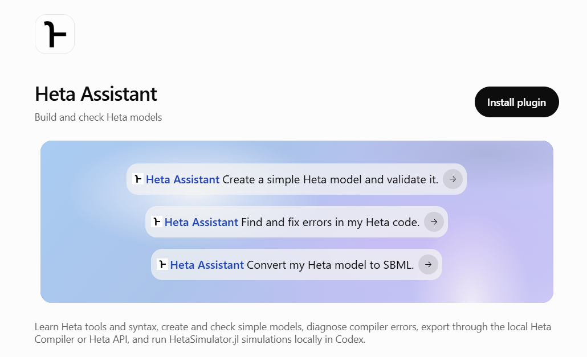

Evgeny Metelkin
2026-11-17

You can now build and check QSP models with an AI assistant, directly in ChatGPT. Heta Assistant is available in the plugin directory for ChatGPT and Codex.
I built it to help turn systems biology and pharmacology questions into models you can check, explore, and use.
What can you do with it?
Find Heta Assistant in the Plugin Directory.
To try it, ask: "Create a simple A => 2B + 3C reaction model, check and compile it."
License: CC-BY-4.0